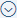

Object Page Classic Header
sap.uxap.ObjectPageLayout's classic header.Main Structure
The ObjectPageHeader control consists of two main parts - Header
Title and Header Content.
-
Header Title (
headerTitle) - Displayed at the top of the header and always remains visible above the scrollable content of the page. It contains the title and most prominent details of the object. -
The Header Content (
headerContent) - Scrolls along with the content of the page until it disappears (collapsed header). When scrolled back to the top it becomes visible again (expanded header). It contains all the additional information of the object.

Header Title
This part of the header contains the basic information of the object.

The top area in the Header Title is for the navigation bar
(navigationBar). It contains the top-most element
(sap.m.Bar) and provides the option to have a
Back button for returning to the previous selection and
navigation actions on the opposite side.
The area below the navigation bar is reserved for breadcrumbs navigation on one side
(breadcrumbs) and actions on the other
(actions). The actions are declared as
sap.uxap.ObjectPageHeaderActionButton instances.
You can set title (objectTitle) and subtitle
(objectSubtitle). On larger screens the subtitle is displayed
next to the title. After a certain breakpoint, the subtitle moves below the
title.
You can display several optional indicators right after the title. They are considered part of the title and when there is not enough space they are wrapped and moved to more lines along with the title text.
|
Optional Indicator |
API Properties |
|---|---|
|
|
|
|
|
|
|
|
|
|
|
|
|
 Selector |
|
Keep in mind that Locked and Unsaved changes are mutually exclusive. If both of them are set to be visible, only the Locked state is displayed.
You can show and hide both the markers (Favorite and
Flagged) simultaneously with the
showMarkers boolean property.

You can add an icon-sized image before the title by defining the image location in
the objectImageURI property. You can set the text used for the
Alt and Tooltip attributes of the image with
the objectImageAlt property. To set the shape to
Circle or Square, use the
objectImageShape property.
You can control whether the image, title, subtitle, and actions are always visible or visible only when the header is collapsed (snapped).
To build a custom headerTitle, you can extend the
ObjectPageHeader class and then use any control in the
headerTitle aggregation. The ObjectPageLayout,
however, needs correct values for the objectImageURI /
objectImageShape and headerDesign, as those
properties are important for the headerContent in order to style it
properly.
Header Content
The second part of the header is the Header Content. This is an aggregation of
controls that are displayed in a float layout underneath the Header Title. The
controls that can be used in the headerContent aggregation are the
standard OpenUI5
controls and they are automatically styled to fit the current header style.
With the use of the sap.uxap.ObjectPageHeaderLayoutData class, you
can specify for each control used in the headerContent aggregation,
whether it's visible on small, medium or large-sized layouts, what width it takes
and whether it has a visual separator displayed before and/or after itself.